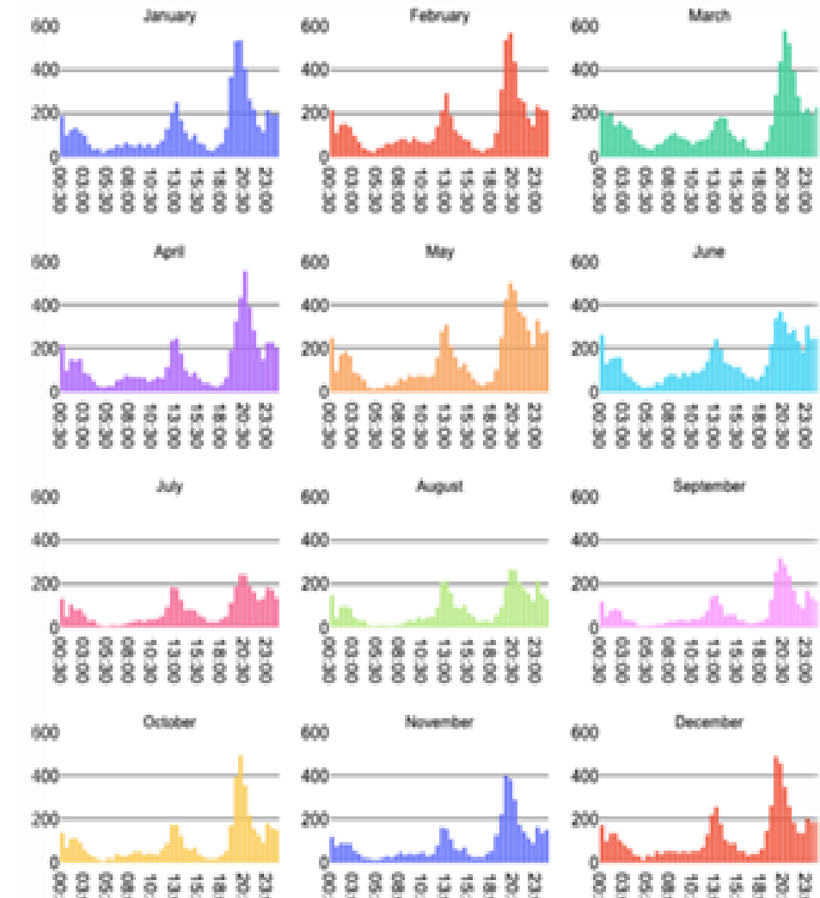
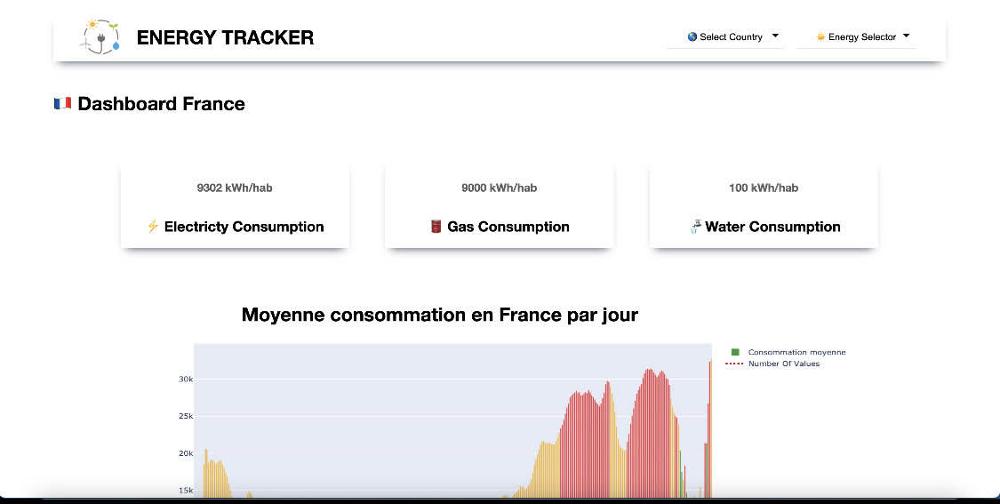

06/2021 – 09/2022
Data Scientist et Data Engineer
Gridpocket
Réalisation
Data Scientist :
- Analyse et réécriture des algorithmes data en Python, réduisant les temps de calcul par 10 et améliorant significativement les performances.
- Développement d'algorithmes de prédiction des profils énergétiques en utilisant des méthodes statistiques, des régressions linéaires multiples, K-Means et RandomForest.
- Création de modèles de prédiction des courbes de charge quotidiennes à l’aide de séries temporelles et de réseaux neuronaux de type LSTM.
- Implémentation d'algorithmes de machine learning supervisé pour estimer la consommation des utilisateurs en fonction de leurs profils et habitudes.
Data Engineer :
- Mise en place d’un pipeline d’intégration continue avec CircleCI et Kubernetes, orchestré via Airflow.
- Développement d’algorithmes d’extraction en Python, optimisés pour formater efficacement les données et les injecter dans le datalake.
- Implémentation de contrôles qualité et de tours de contrôle via GreatExpectation pour garantir la fiabilité des données.
- Refonte complète de l’architecture des fichiers et du code sur la partie data, améliorant la maintenabilité et les performances.
- Suivi des différents projets en continu et exécution de tests réguliers afin d’assurer la qualité des mises en production.
Data Analyst :
- Développement d’un outil BI sur Django permettant l’analyse des variables et le suivi de leur évolution en temps réel.
- Analyse approfondie des différentes variables liées aux profils énergétiques, identifiant les tendances et anomalies.
- Rédaction d’un rapport statistique détaillé (~100 pages) mettant en évidence les corrélations et les impacts sur la consommation énergétique.
Méthodologie & Environnement
Méthodologie : Méthode agile avec **sprints et réunions quotidiennes**. Support constant des projets clients (notamment en R&D), avec **tests rigoureux et déploiements supervisés**. Participation active aux réunions avec **investisseurs et clients** pour présenter les nouveautés et innovations.
Galerie

